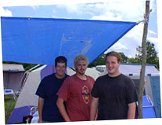
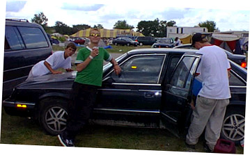

Day 5: Farewell...
It's more than a music party -- Tucked behind the underground tent is Cornerstone's ArtRageous and Imaginarium exhibits. Authors, painters, and others of a creative bent can enjoy conferences, discussion, and great coffee. The midnight film festival was cool, too...
So much music, so little time... Sob! Here's a peek at some of the cool stuff I stumbled across over the course of the festival. Some oldies and some fresh stuff -- no matter what the genre, it's hot stuff.
Follow the adventures of Squeaky the Duck on his adventures at the fest. From his near-death experience at the hands of Kevin131 to a DC Talk sighting, he's been almost everywhere.
Well, T-shirts, too. Cornerstone is a great place to find a variety of wacky hairstyles, and most of the owners are good natured sorts who're quite willing to offer their coifs for a good cause -- this page, for one!
What do you get when you put a bunch of music-obsessed usenet junkies in one place? Vibrating hairrushes. That's what. The fourth annual RMC Cornerstone picnic is here, captured in bits and bytes for all of posterity...
Whether it's beating the heat, finding munchies, or selecting that perfect camping site, there's someone who's been through it and has some words of wisdom to offer. Recorded here for posterity are essential Cornerstone survival skills.
All good things must come to an end; as Sunday arrived, we all wound down and enjoyed the final day of the fest. I hooked up with an old online friend, Jess Gockley, and she introduced me to someone she had been hanging around the fest with. To my shock, the lemon-weilding dude was another online friend I'd lost track of almost three years ago! We caught up on old times and talked for a while before I jogged off to catch up with the members of Bathtub Mary. I'd met one of the guys from the group Saturday night, and hooked up with the rest of them to talk about their plans for the future. After hearing some of their stuff, they were a shoe-in for the best finds page. Bathtub Mary is an acquired taste, with a very unique sound.
Back at Ben's campsite, we helped pack things up and loaded Jason's car with gear to be taken back to the hotel. Affectionately known as The Millenium Falcon, Jason's Dodge Pacer requires such coaxing as a kick to the dashboard and a smack to the speedometer to function properly... hence its name. We made it to a couple other concerts before evening fell; Jason was sure to catch the Stavesacre show in the hardcore tent.

The last few hours were a jackpot for bargain hunters; the great True Tunes Music Sale, a fire-sale at the Imaginarium bookstore, and other last minute deals by the various vendors in the exhibit tents made for some great purchases. I walked away with a pile of CDs, and a 25 cent copy of Joe Haldeman's classic scifi novel, The Forever War. What a deal!
As the day ticked down to the final seconds, the dance tent marched on. The die-hard ravers kept dancing as Prophecy of Panic's Greg Hobgood packed up the equipement. I talked to Scott Blackwell of N*Soul records for a few minutes at the mixing board, snapped a polaroid of the scene, and said my goodbyes. A fitting farewell to Cornerstone '97.